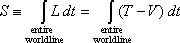

Throw an apple vertically upward from the ground (zero height). We demand that 3 seconds later the apple return to our hand at the same height (zero) from which we launched it. What is the motion of this apple between the events of launch and catch? At what height can the apple be found at any given time? Or to express the question more technically: What is the worldline of the apple between launch and catch? We use the principle of least action to find answers to these questions.
The principle of least action defines the action S for motion along a worldline between two fixed events:
Here L is called the Lagrangian. In simple cases the Lagrangian is equal to the difference between the kinetic energy T and the potential energy V, that is, L = T – V. In this interactive document we will approximate a continuous worldline with a worldline made of straight connected segments. The computer then multiplies the value of (T – V) on each segment by the time lapse t for that segment and adds up the result for all segments, giving us an approximate value for the action S along the entire worldline. Our task is then to move the connected segments of the worldline so that they result in the minimum total value of the action S.
In the following we assume a mass of 0.2 kilogram for the apple.
We assume that you are acquainted with the concepts of acceleration, energy, and worldline.
Find the worldline of the apple that has the minimum value of the action. To do this quickly, use the interactive display to manipulate intermediate points of the worldline. With the cursor, drag each of the three black intermediate points on the worldline up and down. Notice the following features of the display:
You can find the height and time of any location (any event) on the screen by pointing the cursor at that location. The coordinate values appear at the lower right.
The display shows the current value of the total action S at the bottom left of the display. Below it is displayed the minimum value Smin of the action found so far as you have dragged that dot up and down.
Your goal is to find the worldline for which the total action is the minimum. For this particular motion, the minimum value of the action is the most negative.
Start with the initial worldline that lies straight across the bottom of the spacetime diagram. (RESET if you have been trying out the display.)
Put the cursor on one of the three intermediate point-events and drag it upward. What happens to the value of the action shown below the display? Continue dragging that same point upward.
Drag the dot to the height for which the value of the total action is minimum. Then drag another intermediate point up and down. You can tell immediately when you have passed the height for minimum action, because the Smin display stops changing.
Set the second dot to the minimum-action value and move along to drag the third dot up and down. When you have set the third dot to the height for minimum action, make a prediction about the answer to the following question:
Try it by dragging the first dot up and down again. What is the answer to the question? Did you predict correctly?
Now cycle repeatedly through the three dots, moving each one to find the minimum (most negative) value of the action. PLEASE BE PATIENT. It is worth going through this tedious manual process completely at least once. After many cycles through the three dots, you reach a condition in which added cycles through the dots does not further reduce the value of the total action. Record the value of the minimum action for your final worldline.
The worldline you have constructed satisfies the condition of least action for this special case of a worldline of four straight segments equally spaced along the time axis.
Of course a worldline with only three intermediate points is not realistic. The second display is a bit better, with many intermediate points. If you want, you can start the process of finding the worldline of least action by dragging each of these many event-dots up and down. But life is short, and computers are designed to do routine work quickly. So let the computer find the worldline of minimum action by repeated cycling through the dot-events at the ends of each segment of the worldline.
Click on the button labeled HUNT. The computer begins cycling quickly through the dots, hunting for the worldline of least action. You can interrupt the process at any time by clicking on PAUSE and then either continue by pressing HUNT again or return to the initial horizontal worldline by clicking on RESET. When the action stops changing as the program hunts, record the value of the action for this worldline and the value of the maximum height of the trajectory.
Of course even a worldline consisting of many straight segments is not the same as a continuous worldline, made up of an infinite number of event-points. The computer is not able to carry out the minimization of action for an infinite number of points. But you can imagine that as more and more dots are added, the value of the resulting action gets closer and closer to the value for a continuous worldline.
This second program differs from the first one in that it allows you to change the heights of initial and final events. Drag the final event to 5 meters height. Notice that the program has rescaled the vertical axis to make it possible for the worldline to fit into the window. Before you press the HUNT button answer the following question:
Use the program below to show that for the worldline of least action the acceleration of the apple, corresponding to each pair of successive segments, is constant, i.e. the motion of the apple is governed by Newton's second law of motion.
The acceleration for each pair of successive segments of current test worldline is displayed in table situated on the right. Click the HUNT button to start automatic hunting for the minimum-action worldline. When the worldline stops changing, click on PAUSE. What is the value of the constant acceleration?
Use the program below to show that for the worldline of least action the mechanical energy of the apple along each segment is a constant of the motion.
The total energy E = T + V for each segment of current trial worldline is displayed in the table at the right of the display. Click the HUNT button to find the worldline of least action. Write down the value of the constant energy.
Mechanics is often taught using Newton's second law: F = ma. What is the relation between F = ma and the principle of least action that we have been describing here? Richard Feynman answers this question clearly:
There is quite a difference in the characteristic of a law which says a certain integral from one place to another is a minimum—which tells something about the whole path—and of a law which says that as you go along, there is a force that makes it accelerate. The second way tells how you inch your way along the path, and the other is a grand statement about the whole path. ... Let's suppose that we have the true path and that it goes through some point a in space and time, and also through another nearby point b. Now if the entire integral from t1 to t2 is a minimum, it is also necessary that the integral along the little section from a to b is also a minimum. It can't be that the part from a to b is a little bit more. Otherwise you could just fiddle with just that piece of the path and make the whole integral a little lower. So every subsection of the path must also be a minimum. And this is true no matter how short the subsection. Therefore the principle that the whole path gives a minimum can be stated also by saying that an infinitesimal section of path also has a curve such that it has a minimum action. ... So the statement about the gross property of the whole path becomes a statement of what happens for a short section of the path—a differential statement. ... That's the qualitative explanation of the relation between the gross law and the differential law.
In brief, Feynman is saying that if the entire worldline has minimum action compared with possible nearby worldlines, then every small segment along the worldline must have minimum action compared to possible nearby segments.
This final display allows you to check out Feynman's description by moving one of the point-events on the worldline and watching the resulting change in the action for segments on either side of that point and also the total action of the entire worldline.
Start by playing with the Zoom feature that allows you to look closely at any moveable point-event on the worldline.
This diagram demonstrates that when the worldline minimizes action, every segment also minimizes action. Why is this important? Because, as Feynman says, it connects the principle of least action to Newton's acceleration law F = ma. By analyzing the action on a pair of segments, as in this display, you can derive F = ma using elementary calculus. See details in the paper Classroom derivation of Newtonian mechanics from the principle of least action. by Jozef Hanc, Slavomir Tuleja, and Martina Hancova at the website:
But there is a further payoff: The so-called Lagrange equations are another expression of Newton's laws which are in some ways more general and powerful than F = ma . For an introduction to Lagrange's equations and a paper deriving the Lagrange equations from the principle of least action, see the same website.